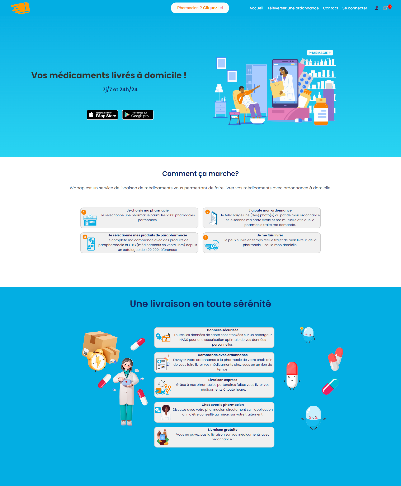

Research in AI
This section shows the visualization method I worked on during my Research experience in Warsaw.
The created method lets the user visualize complex dataset in high dimensional spaces. This method can be used for any numerical datasets such as in finance, marketing...
More information
Visualization of a Diabete dataset colored depending on the insuline level

Freelance Web Developper
This section presents my work as a freelance Web Developper. During this experience I developped websites using mostly React and Node JS but also, WordPress, Angular and Springboot.
I helped the customers define his needs (writing a functional specification), design a solution, cost the project and propose a schedule with different delivery dates, as well as developing it.
More information
Homepage for the pill delivery
